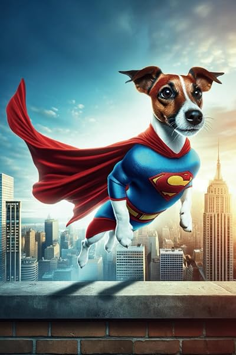
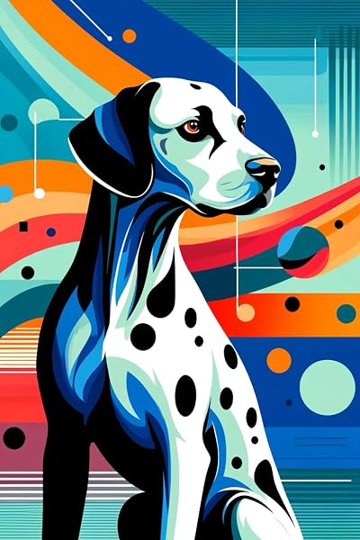

Chi ha un cane ne parla sempre, e un regalo che pensa anche a lui fa felici due volte. Abbiamo raccolto idee semplici, scelte tra prodotti molto venduti e ben recensiti su Amazon, che al momento della scelta costavano meno di 20 euro. I prezzi su Amazon cambiano spesso, quindi controllali prima di comprare.
Si possono anche combinare: un quaderno della collana Cuccioli con la razza del suo cane in copertina, più un gioco o un accessorio, fanno un pacchetto personale con una spesa contenuta. I link sono affiliati: se compri da qui Officina Laerte riceve una piccola commissione, senza costi in più per te.
Il quaderno con la razza del suo cane
Dalla nostra collana Cuccioli: Jack Russell, Bulldog, Chihuahua, Schnauzer, Dalmata, Staffordshire, Cane Corso, Fox Terrier e Maltipoo. Vedi tutte le razze →
 Regina Jack RussellQuaderno pagine bianche, 15,24 x 22,86 cmSu Amazon →
Regina Jack RussellQuaderno pagine bianche, 15,24 x 22,86 cmSu Amazon →
Jack Russell supereroeQuaderno pagine bianche, 15,24 x 22,86 cmSu Amazon → Quaderno ChihuahuaQuaderno a righe, 15,24 x 22,86 cmSu Amazon →
Quaderno ChihuahuaQuaderno a righe, 15,24 x 22,86 cmSu Amazon →
Quaderno DalmataQuaderno a righe, 15,24 x 22,86 cmSu Amazon → Quaderno SchnauzerQuaderno a righe, 15,24 x 22,86 cmSu Amazon →
Quaderno SchnauzerQuaderno a righe, 15,24 x 22,86 cmSu Amazon →
Per giocare insieme
KONG Classic
Il gioco di gomma da riempire di crocchette o patè: lo tiene impegnato a lungo ed è quasi indistruttibile. Scegli la taglia giusta per il cane.
Vedi su Amazon →Lanciapalle Chuckit
Lancia la pallina lontano senza piegarti a raccoglierla bagnata. Un classico per chi va al parco ogni giorno.
Vedi su Amazon →Tappeto olfattivo
Si nascondono i premietti tra le strisce di stoffa e il cane li cerca col naso: lo stanca e lo calma, utile nei giorni di pioggia.
Vedi su Amazon →Gioco interattivo «slow food»
Un gioco a scomparti per far mangiare più lentamente e far lavorare la testa.
Vedi su Amazon →
A passeggio
Borraccia da passeggio PETKIT
La bottiglia con la ciotolina integrata: si apre con un dito e l'acqua che avanza torna dentro.
Vedi su Amazon →Porta sacchetti a forma di osso
Si aggancia al guinzaglio, con i sacchetti igienici già inclusi.
Vedi su Amazon →Collare luminoso ricaricabile
Per farlo vedere bene nelle passeggiate serali d'inverno.
Vedi su Amazon →Medaglietta personalizzabile
Con il nome e il numero di telefono incisi: piccola, utile e personale.
Vedi su Amazon →
Cura e casa
Spazzola autopulente
Raccoglie il sottopelo e con un clic si svuota: la spazzola più comoda per la muta.
Vedi su Amazon →Panno super assorbente
Per asciugare zampe e pelo dopo la pioggia o il bagno, senza riempire casa di asciugamani bagnati.
Vedi su Amazon →
Ricordi e simpatia
Kit impronta della zampa
Per conservare l'impronta del cucciolo: un ricordo da appendere o da regalare.
Vedi su Amazon →Tazza per chi ama i cani
Una tazza da colazione con il cane: il regalo da ufficio per il collega cinofilo.
Vedi su Amazon →Portachiavi a zampa
Due portachiavi a forma di zampa che fanno anche da raccogli peli per i vestiti.
Vedi su Amazon →Bandane per cani
Quattro bandane regolabili, per le foto delle feste e per farlo sentire elegante.
Vedi su Amazon →
Per chi sta per accogliere un cucciolo: la lista di cosa serve quando arriva e la carta d'identità del cane da stampare.